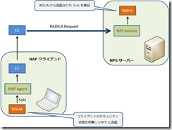
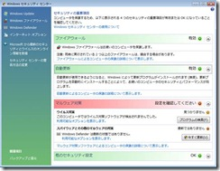
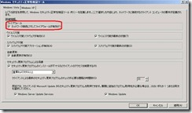
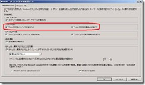
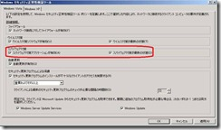

本記事は 2009 年 10 月 29 日に公開された記事を本ブログに移行した記事になります。
本日は、Windows Server 2008 / Vista 以降の OS で使用できる NAP 機能について解説させていただきます。
なお、この内容をご参照されるにあたって必要となるNAP の基本的な概念や、アーキテクチャーについては、下記の公開情報などをご参照ください。
TechNet - ネットワーク アクセス保護
http://technet.microsoft.com/ja-jp/library/cc753550(WS.10).aspx
MSDN - Network Access Protection
http://msdn.microsoft.com/en-us/library/aa369712(VS.85).aspx
本稿では、Windows の標準で使用可能な WSHA (Windows システム正常性エージェント) がチェックできる項目についてご紹介します。
大きく分類するとファイアウォール、ウィルス対策ソフト、スパイウェア対策アプリケーション、セキュリティ更新プログラムに関する状態、の計 4 つについてチェックすることができますが、セキュリティ更新プログラムについての確認の仕組みは他の 3 つの項目と比較して若干複雑です。
このため、まず本稿ではファイアウォール、ウィルス対策ソフト、スパイウェア対策アプリケーションについてご紹介し、セキュリティ更新プログラムについての確認の仕組みについては、次回お伝えする予定です。
- WSHA とは？
まず最初に、WSHA について簡単に解説します。
NAP では、SHA (システム正常性エージェント) と呼ばれるエージェントがクライアントコンピューター上で動作しており、クライアントの状態を収集して SoH (正常性ステートメント) という形式にとりまとめ、NPS サービス上で稼動する SHV (システム正常性検証ツール) に報告します。SHA は 1 つのコンピューターに複数登録することができ、どのような項目をチェックするかはそれぞれの SHA に依存します。
SHA にはサード パーティ製の製品もありますが、Windows 標準で使用可能な SHA (と、もちろんそれに対応する SHV) があります。
これが WSHA (Windows セキュリティ正常性エージェント) です。WSHA は Windows XP SP3 以降、Windows Vista、Windows 7、Windows Server 2008、Windows Server 2008 R2 に標準で搭載されており (残念ながら、Windows Server 2003 では NAP クライアント機能はサポートされていません！)、NPS サービス上の WSHV (Windows セキュリティ正常性検証ツール) と連携することで、クライアントのセキュリティの正常性を検証します。

図中の EC、ES は、それぞれ NAP 強制クライアントと、NAP 強制サーバーを示しています。それぞれのコンポーネントの役割については、冒頭でもご紹介いたしました下記の公開情報にて解説されています。あわせてご参照ください。
TechNet - ネットワーク アクセス保護
http://technet.microsoft.com/ja-jp/library/cc753550(WS.10).aspx
なお、WSHA は Network Access Protection Agent サービスを開始すると、同時に動作を開始します。
- WSHA でチェックできる項目
前述の通り、WSHA は Windows 標準で使用することができる SHA であり、チェックすることができる項目はあらかじめ定められています。具体的には、下記の項目をクライアントのセキュリティ状態として管理し、SoH として WSHV に送付します。
- インストールされている ファイアウォール ソフトウェアの状態
- インストールされている ウィルス対策ソフトの状態
- インストールされている スパイウェア対策アプリケーションの状態
- 自動更新の設定状態
- セキュリティ更新プログラムの適用状態
- 最後に Windows Update サイトと通信を行ってからの経過時間
- Windows Update の接続先の種類 (Microsoft Update / Windows Update / WSUS )
- 現在適用されていないセキュリティ更新プログラムの重要度
また、WSHA が使用する SoH のフォーマットは、下記の公開情報でも紹介されています。
- 参考情報
MSDN - WSHA SoH
http://msdn.microsoft.com/en-us/library/cc251363(PROT.13).aspx
- Microsoft 製品とサード パーティ製品について
WSHA は、ファイアウォール、ウィルス対策ソフト、スパイウェア対策アプリケーションの設定状況を、コントロール パネルの “セキュリティ センター” から受け取ります。

ご存知の方も多いかと思いますが、Windows XP 以降の OS ではファイアウォール製品として Windows ファイアウォールが、Windows Vista 以降の OS ではスパイウェア対策アプリケーションとして Windows Defender が既定でインストールされています。
もちろん、サード パーティ製のセキュリティ製品であっても、セキュリティセンターに対応しているものであれば NAP の検疫チェックの対象となります。
逆に言えば、セキュリティセンターが認識できないセキュリティ製品を有効にしていても、クライアントのセキュリティ状態は正常と見なされませんのでご注意ください。
それでは、それぞれのセキュリティチェックの項目が取りうる状態について、より詳細に解説していきます。
1. インストールされている ファイアウォール ソフトウェアの状態
ファイアウォールの状態は、”Firewall_ClientStatusCode” として SoH に格納されます。取り得る状態は下記の通りです。
· マイクロソフト製品のファイアウォールが有効 / 無効
· サード パーティ製品のファイアウォールが有効 / 無効
· ファイアウォールが一時停止されている / されていない
この項目を評価する WSHV の設定は、下記の項目です。

[ネットワーク接続に対してファイアウォールが有効] のチェックがオンになっている場合は、下記の状態はポリシー非準拠と判定されます。
· ファイアウォールが無効である場合
· ファイアウォールが一時停止されている場合
“一時停止” のステータスは、現在の Microsoft から提供されているセキュリティ製品では実装されておらず、一部のサード パーティ製のセキュリティ製品でサポートされているステータスを管理するために用意されており、Windows Vista 以降の OS でサポートされています。
セキュリティ センターではこのステータスは “警告状態” として取り扱われ、NPS サーバーでは無効になっている場合と同等に扱われます。
2. インストールされている ウィルス対策ソフトの状態
ウィルス対策ソフトの状態は、”AntiVirus_ClientStatusCode” として SoH に格納されます。取り得る状態は下記の通りです。
· マイクロソフト製品のウィルス対策ソフトが有効 / 無効
· サード パーティ製品のウィルス対策ソフトが有効 / 無効
· ウィルス定義ファイルが最新である / 最新ではない
· ウィルス対策ソフトが一時停止されている / されていない
この項目を評価する WSHV の設定は、下記の項目です。

[ウィルス対策ソフトウェアが有効] のチェックがオンになっている場合は、下記の状態はポリシー非準拠と判定されます。
· ウィルス対策ソフトが無効である場合
· ウィルス対策ソフトが一時停止されている場合
追加オプションである [ウィルス対策が最新の状態] のチェックがオンになっている場合は、下記の状態はポリシー非準拠と判定されます。
· ウィルス定義ファイルが最新ではない場合
3. インストールされている スパイウェア対策アプリケーションの状態 (Windows Vista 以降の OS のみ)
スパイウェア対策アプリケーションの状態は、” Antispyware_ClientStatusCode” として SoH に格納されます。取り得る状態は下記の通りです。
· マイクロソフト製品のスパイウェア対策アプリケーションが有効 / 無効
· サード パーティ製品のスパイウェア対策アプリケーションが有効 / 無効
· スパイウェア定義ファイルが最新である / 最新ではない
· スパイウェア対策アプリケーションが一時停止されている / されていない
この項目を評価する WSHV の設定は、下記の項目です。

[スパイウェア対策アプリケーションが有効] のチェックがオンになっている場合は、下記の状態はポリシー非準拠と判定されます。
· スパイウェア対策アプリケーションが無効である場合
· スパイウェア対策アプリケーションが一時停止されている場合
追加オプションである [スパイウェア対策が最新の状態] のチェックがオンになっている場合は、下記の状態はポリシー非準拠と判定されます。
· スパイウェア定義ファイルが最新ではない場合
次回は、引き続き、セキュリティ更新プログラムについての確認の仕組みをご紹介して参ります。
[特記事項]
本情報の内容（添付文書、リンク先などを含む）は、作成日時点でのものであり、予告なく変更される場合があります。